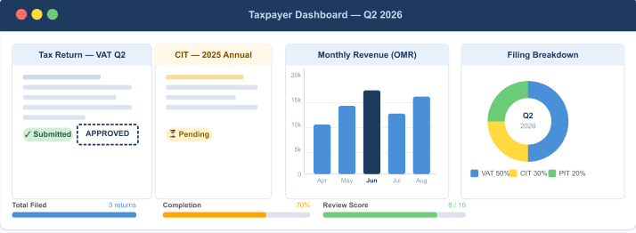

This online system allows registered taxpayers to
file returns, manage payments, and track submissions
online. The portal is designed to simplify communication between
taxpayers and the tax authority
Use the navigation menu above to explore filing options, review your
payment history, or contact support if you need assistance.
New users must verify their email before submitting a first
return.
Filing types include VAT, CIT, and PIT .

Figure 1: Overview of the taxpayer dashboard
Announcement: VAT Filing Deadline Extended
The deadline for quarterly VAT filing has been extended by two weeks
to accommodate the recent system maintenance window.
All pending VAT submissions will now be accepted until the end of
the month without penalty.
Source: Portal Communications Team
Published: 20 July 2026
Recent Filing Types
Filing status for the current period
Tax Type
Filing Period
Status
VAT
Q2 2026
Submitted
CIT
2025 Annual
Pending
PIT
2025 Annual
Draft
Quick Links
Key Terms
VAT
A tax added to most goods and services at the point of sale.